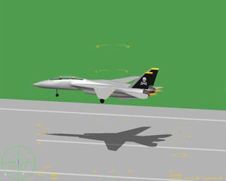
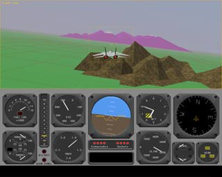

I remember the days when we hunched around an old IRIS 2400 Turbo playing this amazing flight simulator game from Silicon Graphics, Inc. I thought, "I'd like to work for that company!" History has been kind, and I love my job. :-)

Time passes and computers just keep getting faster. Modern personal computers in the 90's are now as powerful as graphics workstations of the 80's. That old Flight demo now runs on a PC with no hardware acceleration!

I am pleased to announce the availability of the classic IRIS GL demo, Flight, for IBM PC's running Windows 95 and Windows NT 4.0. I recently ported it to the industry standard 3D graphics API, OpenGL(tm). From there it seemed simple enough to port it to Windows, and so I did, using the beta version of Cosmo OpenGL from Silicon Graphics.
Disclaimer: This is unsupported software. If you have a problem running Flight you may send your questions and/or bug reports to the address listed below. However, I may not have time to respond.
Michael I Gold (gold@sgi.com)
Silicon Graphics Computer Systems
Last updated April 4, 1997